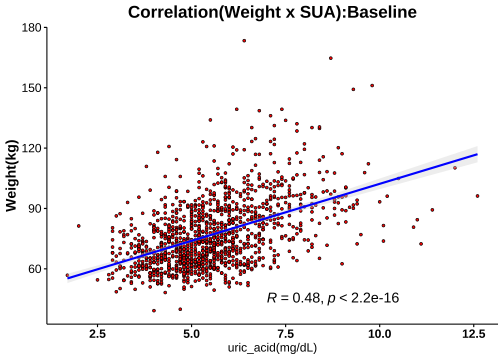
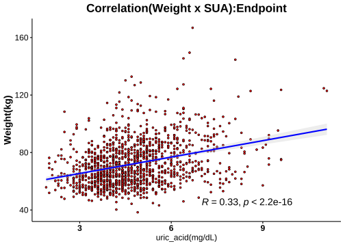

1.8 分層分析-3: 尿酸(Serum Uric Acid)
1.8.1 相關分析(Correlation Analysis)



1.8.2 Cutoff-1 (♂7.6/♀6.6)
| No change | Decrease | Increase | Normal>High | High>Normal | High>High | Sum | |
|---|---|---|---|---|---|---|---|
| female | 72 | 383 | 102 | 23 | 51 | 17 | 648 |
| male | 11 | 59 | 12 | 3 | 22 | 13 | 120 |
| Sum | 83 | 442 | 114 | 26 | 73 | 30 | 768 |
|
Cutoffs: Male: 7.6 (mg/dL) Female: 6.6(mg/dL) |


成效(Effectiveness)


成效(%)-Blood

| No change | Decrease | Increase | Normal>High | High>Normal | High>High | No change | Decrease | Increase | Normal>High | High>Normal | High>High | |
|---|---|---|---|---|---|---|---|---|---|---|---|---|
| 體重(T0) | 72.06 ± 1.36 | 71.99 ± 0.65 | 70.36 ± 1.22 | 76.02 ± 2.75 | 81.97 ± 1.88 | 85.22 ± 3.59 | 98.94 ± 8.18 | 93.72 ± 1.74 | 86.89 ± 4.13 | 93.93 ± 23.61 | 102.31 ± 3.54 | 109.38 ± 6.41 |
| BMI(T0) | 28.32 ± 0.54 | 27.74 ± 0.24 | 27.23 ± 0.38 | 29.27 ± 0.81 | 31.87 ± 0.69 | 32.91 ± 1.5 | 33.53 ± 3.09 | 31.16 ± 0.54 | 28.98 ± 1.24 | 32.23 ± 6.9 | 33.29 ± 0.96 | 35.75 ± 2.04 |
| 體脂重(T0) | 29.81 ± 0.94 | 28.53 ± 0.46 | 27.62 ± 0.8 | 32.71 ± 1.95 | 36.11 ± 1.33 | 38.16 ± 2.84 | 36.65 ± 6.17 | 30.9 ± 1.09 | 26.92 ± 2.74 | 34.53 ± 15.19 | 37.54 ± 2.72 | 43.29 ± 4.84 |
| 體脂率(T0) | 40.83 ± 0.69 | 38.88 ± 0.32 | 38.67 ± 0.58 | 42.36 ± 1.04 | 43.5 ± 0.71 | 43.96 ± 1.65 | 35.09 ± 2.63 | 32.6 ± 0.67 | 30.5 ± 2.13 | 34 ± 6.62 | 35.86 ± 1.48 | 38.28 ± 2.29 |
| 骨骼肌質量指數(T0) | 6.73 ± 0.09 | 6.85 ± 0.04 | 6.73 ± 0.07 | 6.88 ± 0.12 | 7.33 ± 0.1 | 7.44 ± 0.18 | 8.85 ± 0.35 | 8.9 ± 0.1 | 8.5 ± 0.27 | 8.73 ± 1.1 | 8.98 ± 0.11 | 9.18 ± 0.24 |
| 骨骼肌率(T0) | 32.13 ± 0.37 | 33.32 ± 0.17 | 33.29 ± 0.32 | 31.48 ± 0.55 | 30.99 ± 0.39 | 30.86 ± 0.92 | 36.53 ± 1.45 | 38.15 ± 0.4 | 39.19 ± 1.29 | 36.97 ± 3.57 | 36.3 ± 0.86 | 34.98 ± 1.31 |
| 內臟脂肪面積(T0) | 151.53 ± 5.48 | 141.48 ± 2.26 | 139.35 ± 4.14 | 165.75 ± 9.38 | 178.73 ± 4.99 | 195.46 ± 10.38 | 147.06 ± 15.52 | 133.49 ± 5.56 | 111.75 ± 13.53 | 81.3 ± 1.88 | 152.4 ± 11.49 | 180.26 ± 20.65 |
| 腰圍(T0) | 92.85 ± 1.22 | 91.96 ± 0.59 | 90.62 ± 1.04 | 97.55 ± 2.64 | 101.23 ± 1.46 | 103.91 ± 3.09 | 108.99 ± 5.43 | 105.24 ± 1.38 | 98.28 ± 3.39 | 104.03 ± 17.34 | 115.81 ± 3.54 | 118.12 ± 5.11 |
| 除脂體重(T0) | 42.24 ± 0.63 | 43.46 ± 0.28 | 42.75 ± 0.58 | 43.31 ± 0.95 | 45.86 ± 0.75 | 47.06 ± 1.34 | 62.28 ± 2.14 | 62.82 ± 0.98 | 59.97 ± 2.42 | 59.4 ± 9.72 | 64.77 ± 1.36 | 66.09 ± 2.32 |
| 基礎代謝率(T0) | 1282.58 ± 13.63 | 1308.89 ± 6 | 1293.39 ± 12.62 | 1305.48 ± 20.55 | 1360.65 ± 16.24 | 1386.35 ± 29.08 | 1715.55 ± 46.26 | 1726.97 ± 21.12 | 1665.25 ± 52.15 | 1652.67 ± 209.58 | 1769.05 ± 29.49 | 1797.62 ± 50.09 |
| 糖化血色素(T0) | 5.5 ± 0.04 | 5.45 ± 0.02 | 5.47 ± 0.05 | 5.55 ± 0.11 | 5.71 ± 0.07 | 5.62 ± 0.13 | 5.96 ± 0.17 | 5.69 ± 0.06 | 6.01 ± 0.23 | 6.13 ± 0.54 | 5.73 ± 0.08 | 5.97 ± 0.29 |
| 空腹血糖(T0) | 85.21 ± 1.16 | 85.54 ± 0.48 | 86.28 ± 1.52 | 86.52 ± 2.76 | 87.9 ± 1.86 | 85.47 ± 2.23 | 93.45 ± 2.94 | 89.24 ± 1.53 | 99.92 ± 10.64 | 97 ± 15.28 | 89.14 ± 2.26 | 92.08 ± 4.67 |
| 空腹胰島素(T0) | 11.67 ± 0.8 | 11.39 ± 0.4 | 10.32 ± 0.55 | 16.08 ± 2.43 | 17.54 ± 1.71 | 23.89 ± 5.72 | 20.31 ± 4.16 | 16.57 ± 1.42 | 16.38 ± 2.3 | 21.57 ± 13.84 | 22.75 ± 2.91 | 22.66 ± 3.26 |
| 胰島素阻抗值(T0) | 2.5 ± 0.19 | 2.55 ± 0.13 | 2.22 ± 0.13 | 3.49 ± 0.54 | 3.87 ± 0.38 | 5.16 ± 1.25 | 4.68 ± 0.92 | 3.71 ± 0.33 | 4.47 ± 1.22 | 6.13 ± 4.6 | 5.15 ± 0.8 | 5.3 ± 0.87 |
| β細胞功能(T0) | 194.96 ± 18.76 | 209.71 ± 10.95 | 192.82 ± 13.45 | 275.19 ± 43.58 | 283.29 ± 43.63 | 385.89 ± 85.13 | 260.02 ± 64.96 | 251.11 ± 31.06 | 198.93 ± 27.15 | 215 ± 81.3 | 357.35 ± 65.71 | 352.61 ± 54.99 |
| 三酸甘油脂(T0) | 104.19 ± 5.21 | 105.67 ± 2.92 | 93.89 ± 4.63 | 97.52 ± 10.38 | 155.25 ± 11.94 | 186.82 ± 55.57 | 147.64 ± 22.4 | 141.75 ± 9.09 | 182.08 ± 30.94 | 100.33 ± 12.88 | 184.32 ± 23.09 | 142.92 ± 26.87 |
| 總膽固醇(T0) | 202.58 ± 4.33 | 197.44 ± 1.93 | 193.82 ± 3.48 | 202.26 ± 9.3 | 196.59 ± 5.63 | 196.76 ± 8.24 | 173.82 ± 8.95 | 196.34 ± 4.63 | 183.42 ± 10.95 | 191 ± 0.58 | 196 ± 9.26 | 197.38 ± 16.75 |
| 高密度脂蛋白(T0) | 57.19 ± 1.64 | 56.61 ± 0.67 | 59.16 ± 1.29 | 56.93 ± 3.15 | 49.86 ± 1.31 | 45.03 ± 2.72 | 42.68 ± 1.44 | 45.69 ± 0.87 | 44.33 ± 2.43 | 48.3 ± 5.37 | 41.85 ± 1.83 | 45.67 ± 4.43 |
| 低密度脂蛋白(T0) | 126.29 ± 3.7 | 123.11 ± 1.7 | 117.96 ± 2.99 | 131.04 ± 7.72 | 124.18 ± 5.01 | 127.94 ± 8.53 | 115 ± 8.85 | 130.75 ± 3.76 | 114.5 ± 9.35 | 128.67 ± 5.78 | 126.5 ± 8.55 | 128.38 ± 14.82 |
| 尿酸(T0) | 4.88 ± 0.1 | 5.07 ± 0.04 | 4.36 ± 0.08 | 5.51 ± 0.15 | 7.33 ± 0.11 | 7.46 ± 0.18 | 5.69 ± 0.32 | 6.28 ± 0.1 | 5.21 ± 0.37 | 6.73 ± 0.57 | 8.28 ± 0.15 | 9.1 ± 0.41 |
| 澱粉脢(T0) | 43.43 ± 1.45 | 45.87 ± 0.76 | 45.64 ± 1.56 | 48.7 ± 3.44 | 43.84 ± 2.28 | 37.24 ± 1.66 | 40.73 ± 4.15 | 42.41 ± 2.07 | 44.25 ± 3.4 | 40.33 ± 4.33 | 37.41 ± 2.26 | 39.23 ± 4.72 |
| 解脂脢(T0) | 25.97 ± 2.27 | 23.93 ± 0.7 | 23.78 ± 1.04 | 25.13 ± 2.53 | 26.27 ± 2.44 | 28.24 ± 3.52 | 27.55 ± 3.5 | 25.1 ± 2.36 | 24 ± 3.73 | 20 ± 4.36 | 25.55 ± 3.35 | 20.69 ± 3.44 |
| 體重(T1) | 67 ± 1.32 | 67.51 ± 0.63 | 65.2 ± 1.15 | 69.13 ± 2.46 | 76.75 ± 1.86 | 78.99 ± 3.37 | 92.22 ± 8.09 | 87.01 ± 1.65 | 80.22 ± 3.84 | 82.8 ± 20.77 | 95.82 ± 3.61 | 101.79 ± 6.43 |
| BMI(T1) | 26.05 ± 0.48 | 26.01 ± 0.23 | 25.21 ± 0.36 | 26.62 ± 0.71 | 29.84 ± 0.68 | 30.5 ± 1.4 | 31.27 ± 3.03 | 28.93 ± 0.5 | 26.79 ± 1.24 | 28.42 ± 6.08 | 31.17 ± 1 | 33.27 ± 2.06 |
| 體脂重(T1) | 26.03 ± 0.92 | 25.5 ± 0.45 | 24.21 ± 0.73 | 28.58 ± 1.87 | 32.69 ± 1.36 | 34.06 ± 2.61 | 32.01 ± 6.02 | 26.13 ± 1.06 | 22.45 ± 2.87 | 26.27 ± 13.18 | 33.18 ± 2.84 | 37.25 ± 4.9 |
| 體脂率(T1) | 38.18 ± 0.7 | 36.96 ± 0.34 | 36.52 ± 0.58 | 40.57 ± 1.26 | 41.85 ± 0.82 | 42.32 ± 1.71 | 32.54 ± 2.9 | 29.57 ± 0.76 | 27.2 ± 2.48 | 28.33 ± 7.31 | 33.59 ± 1.63 | 34.95 ± 2.59 |
| 骨骼肌質量指數(T1) | 6.45 ± 0.08 | 6.6 ± 0.04 | 6.46 ± 0.07 | 6.46 ± 0.11 | 7.04 ± 0.1 | 7.15 ± 0.19 | 8.69 ± 0.4 | 8.59 ± 0.1 | 8.2 ± 0.22 | 8.3 ± 0.92 | 8.68 ± 0.13 | 8.96 ± 0.25 |
| 骨骼肌率(T1) | 33.43 ± 0.37 | 34.22 ± 0.18 | 34.27 ± 0.31 | 32.12 ± 0.67 | 31.75 ± 0.44 | 31.61 ± 0.94 | 37.9 ± 1.61 | 39.74 ± 0.44 | 40.85 ± 1.52 | 40.04 ± 3.93 | 37.51 ± 0.94 | 36.69 ± 1.46 |
| 內臟脂肪面積(T1) | 130.94 ± 5.32 | 125.35 ± 2.26 | 119.77 ± 3.96 | 146.69 ± 9.28 | 163.78 ± 5.29 | 163.77 ± 12.81 | 121.12 ± 13.47 | 109.08 ± 5.09 | 97.29 ± 12.38 | 109.7 ± 57.6 | 135.57 ± 12.49 | 133.37 ± 19.91 |
| 腰圍(T1) | 88.24 ± 1.23 | 87.51 ± 0.57 | 85.44 ± 1.01 | 90.31 ± 2.52 | 96.16 ± 1.49 | 98.22 ± 3.19 | 100.58 ± 4.95 | 98.28 ± 1.39 | 91.29 ± 3.64 | 94.17 ± 16.27 | 109.75 ± 3.74 | 110.3 ± 5.43 |
| 除脂體重(T1) | 40.97 ± 0.58 | 42 ± 0.27 | 40.99 ± 0.56 | 40.55 ± 0.84 | 44.06 ± 0.69 | 44.92 ± 1.35 | 60.21 ± 2.29 | 60.87 ± 0.92 | 57.77 ± 2.07 | 56.53 ± 8.52 | 62.64 ± 1.29 | 64.55 ± 2.28 |
| 基礎代謝率(T1) | 1255.03 ± 12.46 | 1277.27 ± 5.79 | 1255.35 ± 12.13 | 1245.83 ± 18.11 | 1321.57 ± 14.94 | 1340.29 ± 29.18 | 1670.73 ± 49.54 | 1684.73 ± 19.93 | 1617.92 ± 44.78 | 1591 ± 183.65 | 1722.95 ± 27.74 | 1764.08 ± 49.44 |
| 糖化血色素(T1) | 5.23 ± 0.04 | 5.22 ± 0.02 | 5.15 ± 0.03 | 5.16 ± 0.07 | 5.41 ± 0.06 | 5.29 ± 0.08 | 5.6 ± 0.13 | 5.35 ± 0.05 | 5.5 ± 0.12 | 5.17 ± 0.2 | 5.43 ± 0.07 | 5.4 ± 0.09 |
| 空腹血糖(T1) | 77.49 ± 1.18 | 78.66 ± 0.39 | 73.45 ± 1.11 | 68.74 ± 1.65 | 80.53 ± 1.06 | 73.35 ± 2.6 | 82.45 ± 3.48 | 79.32 ± 0.94 | 74.5 ± 2.84 | 66 ± 8.19 | 81.5 ± 1.82 | 77.85 ± 3.23 |
| 空腹胰島素(T1) | 9.02 ± 0.75 | 9.49 ± 0.34 | 6.82 ± 0.56 | 9.15 ± 1.58 | 14.14 ± 1.13 | 17.55 ± 3.86 | 13.75 ± 2.87 | 11.57 ± 1.05 | 9.09 ± 2.52 | 7.19 ± 4.62 | 19.91 ± 4.45 | 13.77 ± 3.07 |
| 胰島素阻抗值(T1) | 1.79 ± 0.16 | 1.89 ± 0.07 | 1.3 ± 0.12 | 1.61 ± 0.29 | 2.87 ± 0.24 | 3.45 ± 0.84 | 2.9 ± 0.66 | 2.3 ± 0.21 | 1.82 ± 0.53 | 1.37 ± 0.98 | 4.24 ± 1.11 | 2.67 ± 0.59 |
| β細胞功能(T1) | 341.17 ± 65.73 | 233.42 ± 17.47 | 214.05 ± 56 | 822.92 ± 306.14 | 351.32 ± 72.45 | 770 ± 309.24 | 300.25 ± 53.81 | 240.82 ± 51.62 | 295.36 ± 71.41 | -6.97 ± 159.42 | 396.37 ± 65.36 | 458.13 ± 106.9 |
| 三酸甘油脂(T1) | 100.53 ± 5.39 | 90.89 ± 2.65 | 90.16 ± 3.05 | 106.13 ± 6.51 | 112.22 ± 5.96 | 115.18 ± 8.72 | 117.73 ± 15.7 | 110.9 ± 6.61 | 134.17 ± 15.07 | 96.67 ± 8.17 | 150.91 ± 20.25 | 133.31 ± 14.82 |
| 總膽固醇(T1) | 212.46 ± 6.03 | 199.19 ± 2.16 | 201.21 ± 4.88 | 209.13 ± 12.73 | 188.51 ± 6.03 | 187 ± 8.94 | 161.27 ± 8.81 | 191.56 ± 6.02 | 202.25 ± 16.9 | 211 ± 28.62 | 183.32 ± 7.92 | 201.69 ± 17.97 |
| 高密度脂蛋白(T1) | 50.43 ± 1.43 | 51.52 ± 0.6 | 49.99 ± 1.15 | 42.89 ± 2.39 | 46.82 ± 1.14 | 40.7 ± 2.67 | 38.21 ± 1.46 | 42.34 ± 1.03 | 42.67 ± 3.7 | 44 ± 5.82 | 38.1 ± 1.67 | 38.22 ± 3.35 |
| 低密度脂蛋白(T1) | 138.29 ± 5.12 | 128.52 ± 1.85 | 129.65 ± 3.95 | 143.7 ± 11.19 | 121.08 ± 5.25 | 124.88 ± 8.41 | 106.55 ± 7.76 | 128.36 ± 4.84 | 133.5 ± 16.16 | 147 ± 25.53 | 121.23 ± 7.25 | 136.85 ± 14.59 |
| 尿酸(T1) | 4.88 ± 0.1 | 3.99 ± 0.04 | 5.16 ± 0.09 | 7.47 ± 0.16 | 5.14 ± 0.11 | 7.39 ± 0.21 | 5.74 ± 0.34 | 4.83 ± 0.1 | 6.26 ± 0.35 | 7.97 ± 0.32 | 6.6 ± 0.14 | 8.92 ± 0.31 |
| 澱粉脢(T1) | 43.89 ± 1.57 | 48.04 ± 0.86 | 44.71 ± 1.64 | 46.13 ± 3.5 | 45.92 ± 2.19 | 39.18 ± 1.93 | 41.64 ± 3.82 | 44.68 ± 2.77 | 46.92 ± 4.46 | 38 ± 4.58 | 38.95 ± 2.25 | 39.69 ± 4.68 |
| 解脂脢(T1) | 36.57 ± 2.27 | 35.99 ± 1.15 | 34.72 ± 1.67 | 40.3 ± 4.9 | 37.29 ± 3.13 | 37 ± 3.51 | 28.36 ± 1.87 | 42.76 ± 5.67 | 37.45 ± 6.55 | 33.33 ± 17.14 | 36 ± 3.18 | 27.92 ± 4.42 |
| 年齡 | 40.01 ± 1.46 | 38.54 ± 0.49 | 38.55 ± 0.82 | 37.39 ± 2.51 | 44.24 ± 1.87 | 36.53 ± 1.62 | 42 ± 4.18 | 40.32 ± 1.52 | 40.42 ± 4.07 | 32 ± 4.04 | 36.82 ± 2.23 | 32.77 ± 3.13 |
| 飲食紀錄完成率(%) | 77.5 ± 3.31 | 70.96 ± 1.56 | 82.6 ± 2.23 | 84.68 ± 3.78 | 67.08 ± 4.24 | 86.27 ± 6.47 | 58.85 ± 13.21 | 70.96 ± 3.83 | 73.54 ± 10.42 | 92.4 ± 3.1 | 63.48 ± 7.43 | 67.19 ± 7.72 |
| 紀錄數量 | 193.31 ± 16.16 | 181.39 ± 6.68 | 232.4 ± 18.24 | 265.14 ± 45.09 | 156.68 ± 16.09 | 231.21 ± 33.7 | 135.06 ± 44.77 | 196.24 ± 20.73 | 215.68 ± 57.74 | 157.77 ± 30.18 | 179.2 ± 54.42 | 113.87 ± 25.89 |
| 上傳照片張數 | 177.23 ± 12.07 | 150.35 ± 5.35 | 192.07 ± 11.23 | 182.59 ± 18.6 | 134.85 ± 13.1 | 187.6 ± 25.74 | 109.76 ± 27.08 | 161.05 ± 16.42 | 220.54 ± 45.53 | 174.02 ± 13.89 | 163.93 ± 34.24 | 116.09 ± 24.12 |
| 碳水攝取率(E%) | 17.24 ± 0.78 | 19.78 ± 0.36 | 16.75 ± 0.53 | 15.31 ± 1.01 | 19.18 ± 0.9 | 14.66 ± 1.5 | 21.19 ± 3.23 | 18.52 ± 0.86 | 16.41 ± 2.32 | 11.61 ± 1.21 | 19.86 ± 1.72 | 14.12 ± 1.38 |
| 蛋白攝取率(E%) | 28.27 ± 0.32 | 27.19 ± 0.15 | 27.99 ± 0.26 | 28.25 ± 0.4 | 27.14 ± 0.33 | 29.17 ± 0.61 | 27.44 ± 1.25 | 27.85 ± 0.37 | 28.2 ± 0.75 | 29.91 ± 1.2 | 27.15 ± 0.75 | 29.01 ± 0.97 |
| 脂肪攝取率(E%) | 54.49 ± 0.58 | 53.03 ± 0.27 | 55.27 ± 0.41 | 56.44 ± 0.93 | 53.68 ± 0.73 | 56.17 ± 1.17 | 51.37 ± 2.25 | 53.63 ± 0.65 | 55.39 ± 1.68 | 58.48 ± 1.07 | 52.99 ± 1.2 | 56.87 ± 0.96 |
| 總攝取熱量(日) | 976.42 ± 16.91 | 974.47 ± 8.85 | 988.98 ± 15.03 | 986.27 ± 28.72 | 1004.5 ± 26.95 | 996.15 ± 26.05 | 1123.09 ± 79.38 | 1118.52 ± 27.8 | 1045.08 ± 60.68 | 950.76 ± 107.14 | 1067.11 ± 55.23 | 1107.97 ± 45.27 |
| 綠燈率 | 85.27 ± 1.72 | 79.55 ± 0.87 | 84.18 ± 1.6 | 90.66 ± 1.68 | 80.92 ± 1.9 | 85.37 ± 4.44 | 70.96 ± 8.77 | 80.55 ± 2.18 | 86.96 ± 3.85 | 85.37 ± 2.23 | 75.52 ± 5.26 | 84.83 ± 3.83 |
| 黃燈率 | 12.79 ± 1.46 | 17.8 ± 0.79 | 14.25 ± 1.43 | 8.39 ± 1.51 | 15.58 ± 1.63 | 13.09 ± 4.17 | 25.63 ± 7.64 | 17.22 ± 1.94 | 12.33 ± 3.47 | 14.63 ± 2.23 | 18.77 ± 4.31 | 14.17 ± 3.59 |
| 紅燈率 | 1.94 ± 0.48 | 2.65 ± 0.26 | 1.56 ± 0.36 | 0.96 ± 0.47 | 3.5 ± 1.07 | 1.54 ± 0.51 | 3.41 ± 1.81 | 2.22 ± 0.66 | 0.71 ± 0.43 | 0 ± 0 | 5.71 ± 2.08 | 1 ± 0.65 |
| 水果(日) | 0.06 ± 0.01 | 0.07 ± 0.01 | 0.07 ± 0.01 | 0.05 ± 0.02 | 0.08 ± 0.02 | 0.02 ± 0.01 | 0.03 ± 0.01 | 0.04 ± 0.01 | 0.03 ± 0.01 | 0.01 ± 0.01 | 0.06 ± 0.03 | 0.04 ± 0.02 |
| 蔬菜(日) | 2.83 ± 0.15 | 2.63 ± 0.06 | 3.17 ± 0.13 | 3.07 ± 0.25 | 2.72 ± 0.18 | 3.24 ± 0.24 | 2.69 ± 0.44 | 2.83 ± 0.18 | 3.07 ± 0.51 | 2.07 ± 0.46 | 2.7 ± 0.32 | 2.98 ± 0.29 |
| 全穀雜糧(日) | 1.17 ± 0.09 | 1.64 ± 0.06 | 1.21 ± 0.07 | 1.03 ± 0.14 | 1.56 ± 0.16 | 1.14 ± 0.22 | 2.19 ± 0.3 | 1.91 ± 0.15 | 1.24 ± 0.27 | 0.63 ± 0.14 | 1.78 ± 0.22 | 1.13 ± 0.24 |
| 蛋豆魚肉(日) | 7.37 ± 0.31 | 6.98 ± 0.13 | 7.92 ± 0.24 | 7.84 ± 0.51 | 7.1 ± 0.38 | 8.79 ± 0.37 | 9.14 ± 1.25 | 8.47 ± 0.37 | 8.33 ± 1.04 | 7.23 ± 2.02 | 7.98 ± 0.8 | 8.99 ± 0.69 |
| 乳品(日) | 0.04 ± 0.01 | 0.06 ± 0 | 0.04 ± 0.01 | 0.03 ± 0.02 | 0.06 ± 0.01 | 0.04 ± 0.02 | 0.05 ± 0.02 | 0.03 ± 0.01 | 0.04 ± 0.02 | 0.02 ± 0.01 | 0.05 ± 0.02 | 0.02 ± 0.01 |
| 油脂(日) | 3 ± 0.15 | 3.17 ± 0.06 | 3.42 ± 0.11 | 3.29 ± 0.21 | 3.16 ± 0.18 | 3.41 ± 0.25 | 3.73 ± 0.48 | 3.52 ± 0.17 | 3.28 ± 0.4 | 2.76 ± 0.81 | 3.36 ± 0.33 | 3.36 ± 0.31 |
| ∆體重 | 5.05 ± 0.26 | 4.48 ± 0.11 | 5.17 ± 0.24 | 6.89 ± 0.61 | 5.22 ± 0.28 | 6.24 ± 0.67 | 6.72 ± 0.95 | 6.72 ± 0.41 | 6.67 ± 1.15 | 11.13 ± 2.85 | 6.49 ± 0.72 | 7.59 ± 0.75 |
| ∆BMI | 2.26 ± 0.31 | 1.73 ± 0.04 | 2.01 ± 0.09 | 2.65 ± 0.24 | 2.03 ± 0.11 | 2.41 ± 0.26 | 2.26 ± 0.33 | 2.24 ± 0.14 | 2.19 ± 0.38 | 3.81 ± 0.83 | 2.12 ± 0.23 | 2.48 ± 0.25 |
| ∆體脂重 | 3.78 ± 0.22 | 3.02 ± 0.09 | 3.41 ± 0.21 | 4.13 ± 0.39 | 3.42 ± 0.23 | 4.1 ± 0.49 | 4.65 ± 0.57 | 4.77 ± 0.32 | 4.48 ± 0.66 | 8.27 ± 2.02 | 4.35 ± 0.61 | 6.05 ± 0.75 |
| ∆體脂率 | 2.65 ± 0.27 | 1.92 ± 0.1 | 2.15 ± 0.2 | 1.79 ± 0.4 | 1.65 ± 0.25 | 1.65 ± 0.29 | 2.55 ± 0.48 | 3.03 ± 0.3 | 3.3 ± 0.56 | 5.67 ± 1.35 | 2.27 ± 0.44 | 3.32 ± 0.64 |
| ∆骨骼肌質量指數 | 0.27 ± 0.03 | 0.25 ± 0.01 | 0.27 ± 0.02 | 0.42 ± 0.06 | 0.3 ± 0.02 | 0.28 ± 0.06 | 0.16 ± 0.11 | 0.3 ± 0.04 | 0.3 ± 0.07 | 0.43 ± 0.18 | 0.3 ± 0.05 | 0.22 ± 0.06 |
| ∆骨骼肌重 | 0.78 ± 0.11 | 0.89 ± 0.04 | 1.07 ± 0.08 | 1.74 ± 0.23 | 1.09 ± 0.11 | 1.29 ± 0.16 | 1.25 ± 0.36 | 1.21 ± 0.17 | 1.41 ± 0.35 | 1.73 ± 0.87 | 1.29 ± 0.25 | 1.05 ± 0.32 |
| ∆內臟脂肪面積 | 17.63 ± 1.07 | 15.88 ± 0.48 | 18.39 ± 1.02 | 17.31 ± 2.45 | 15.15 ± 1.14 | 19.57 ± 2.89 | 25.89 ± 4.01 | 23.87 ± 1.79 | 19.82 ± 2.47 | 29.1 ± 3.02 | 24.96 ± 3.01 | 26.46 ± 5.17 |
| ∆腰圍 | 4.61 ± 0.37 | 4.45 ± 0.14 | 5.19 ± 0.29 | 7.24 ± 0.86 | 5.07 ± 0.45 | 5.69 ± 0.92 | 8.41 ± 1.14 | 6.96 ± 0.48 | 6.99 ± 0.86 | 9.87 ± 1.21 | 6.06 ± 0.77 | 7.82 ± 1.36 |
| ∆除脂體重 | 1.27 ± 0.2 | 1.46 ± 0.07 | 1.76 ± 0.14 | 2.76 ± 0.39 | 1.81 ± 0.19 | 2.14 ± 0.29 | 2.07 ± 0.63 | 1.95 ± 0.29 | 2.19 ± 0.59 | 2.87 ± 1.28 | 2.14 ± 0.4 | 1.55 ± 0.49 |
| ∆基礎代謝率 | -27.56 ± 4.25 | -31.61 ± 1.54 | -38.04 ± 3.05 | -59.65 ± 8.35 | -39.08 ± 4.04 | -46.06 ± 6.21 | -44.82 ± 13.66 | -42.24 ± 6.21 | -47.33 ± 12.76 | -61.67 ± 27.83 | -46.09 ± 8.73 | -33.54 ± 10.59 |
| ∆糖化血色素 | 0.27 ± 0.03 | 0.23 ± 0.01 | 0.32 ± 0.03 | 0.39 ± 0.07 | 0.29 ± 0.04 | 0.33 ± 0.08 | 0.36 ± 0.08 | 0.33 ± 0.04 | 0.51 ± 0.12 | 0.97 ± 0.41 | 0.3 ± 0.04 | 0.57 ± 0.27 |
| ∆空腹血糖 | 7.72 ± 1.14 | 6.88 ± 0.47 | 12.83 ± 1.21 | 17.78 ± 3.12 | 7.37 ± 1.9 | 12.12 ± 2.21 | 11 ± 4.09 | 9.92 ± 1.52 | 25.42 ± 10.28 | 31 ± 7.09 | 7.64 ± 1.64 | 14.23 ± 4.55 |
| ∆空腹胰島素 | 2.56 ± 0.74 | 1.92 ± 0.37 | 3.5 ± 0.46 | 6.93 ± 1.95 | 3.4 ± 1.38 | 6.35 ± 5.14 | 6.56 ± 2.88 | 5 ± 1.31 | 5.84 ± 2.58 | 14.38 ± 9.25 | 2.84 ± 3.01 | 8.89 ± 3.51 |
| ∆胰島素阻抗值 | 0.71 ± 0.17 | 0.66 ± 0.12 | 0.91 ± 0.1 | 1.87 ± 0.43 | 1 ± 0.32 | 1.72 ± 1.12 | 1.78 ± 0.64 | 1.41 ± 0.3 | 2.65 ± 1.27 | 4.77 ± 3.63 | 0.92 ± 0.65 | 2.63 ± 0.9 |
| ∆β細胞功能 | -146.22 ± 66.9 | -23.72 ± 20.12 | -21.23 ± 55.97 | -547.73 ± 290.93 | -68.03 ± 71.63 | -384.11 ± 314.38 | -40.24 ± 71.39 | 10.29 ± 48.86 | -96.43 ± 73.61 | 221.97 ± 166.39 | -39.01 ± 63.68 | -105.52 ± 87.64 |
| ∆三酸甘油脂 | 3.67 ± 5.37 | 14.78 ± 2.34 | 3.74 ± 3.48 | -8.61 ± 9.94 | 43.04 ± 9.84 | 71.65 ± 52.63 | 29.91 ± 20.27 | 30.85 ± 7.05 | 47.92 ± 28.74 | 3.67 ± 12.99 | 33.41 ± 15.24 | 9.62 ± 16.24 |
| ∆總膽固醇 | -9.88 ± 4.25 | -1.75 ± 1.65 | -7.38 ± 4.04 | -6.87 ± 5.73 | 8.08 ± 5.5 | 9.76 ± 5.44 | 12.55 ± 9.78 | 4.78 ± 4.12 | -18.83 ± 12.87 | -20 ± 29.14 | 12.68 ± 6.52 | -4.31 ± 12.52 |
| ∆高密度脂蛋白 | 6.76 ± 0.99 | 5.08 ± 0.44 | 9.17 ± 0.83 | 14.04 ± 1.92 | 3.05 ± 1.08 | 4.33 ± 1.45 | 4.47 ± 1.26 | 3.36 ± 0.99 | 1.66 ± 3.68 | 4.3 ± 1.1 | 3.75 ± 1.23 | 7.45 ± 2.1 |
| ∆低密度脂蛋白 | -12 ± 3.46 | -5.41 ± 1.45 | -11.69 ± 3.45 | -12.65 ± 5.31 | 3.1 ± 4.82 | 3.06 ± 5.04 | 8.45 ± 8.36 | 2.39 ± 3.41 | -19 ± 11.21 | -18.33 ± 24.67 | 5.27 ± 5.31 | -8.46 ± 11.55 |
| ∆尿酸 | 0 ± 0.02 | -1.08 ± 0.03 | 0.8 ± 0.05 | 1.96 ± 0.23 | -2.19 ± 0.13 | -0.08 ± 0.33 | 0.05 ± 0.05 | -1.45 ± 0.09 | 1.05 ± 0.21 | 1.23 ± 0.49 | -1.68 ± 0.19 | -0.18 ± 0.55 |
| ∆澱粉脢 | 0.46 ± 1.16 | 2.17 ± 0.51 | -0.93 ± 0.8 | -2.57 ± 2.08 | 2.08 ± 1.03 | 1.94 ± 1.47 | 0.91 ± 1.79 | 2.27 ± 1.84 | 2.67 ± 3.09 | -2.33 ± 5.17 | 1.55 ± 1.39 | 0.46 ± 1.49 |
| ∆解脂脢 | 10.6 ± 2.17 | 12.06 ± 0.9 | 10.93 ± 1.41 | 15.17 ± 4.13 | 11.02 ± 2.29 | 8.76 ± 3.64 | 0.82 ± 3.43 | 17.66 ± 4.65 | 12 ± 6.02 | 13.33 ± 14.15 | 10.45 ± 1.92 | 7.23 ± 2.44 |
| ∆體重(%) | 7.05 ± 0.36 | 6.23 ± 0.15 | 7.35 ± 0.31 | 8.95 ± 0.67 | 6.49 ± 0.35 | 7.31 ± 0.65 | 6.97 ± 1.03 | 7.15 ± 0.41 | 7.58 ± 1.27 | 11.81 ± 0.25 | 6.49 ± 0.7 | 7.18 ± 0.81 |
| ∆BMI(%) | 7.67 ± 0.71 | 6.24 ± 0.15 | 7.36 ± 0.31 | 8.96 ± 0.67 | 6.48 ± 0.35 | 7.31 ± 0.65 | 6.93 ± 1.02 | 7.14 ± 0.41 | 7.59 ± 1.27 | 11.81 ± 0.24 | 6.49 ± 0.7 | 7.18 ± 0.82 |
| ∆體脂重(%) | 13.14 ± 0.72 | 10.95 ± 0.34 | 12.35 ± 0.73 | 13.02 ± 1.2 | 10.18 ± 0.8 | 10.91 ± 1.09 | 14.97 ± 2.62 | 15.98 ± 1.13 | 18.48 ± 2.85 | 27.9 ± 4.68 | 12.72 ± 1.71 | 15.86 ± 2.36 |
| ∆體脂率(%) | 6.59 ± 0.58 | 5.1 ± 0.27 | 5.46 ± 0.61 | 4.49 ± 1.02 | 4 ± 0.63 | 3.9 ± 0.75 | 8.6 ± 2.44 | 9.61 ± 0.98 | 12 ± 2.19 | 18.33 ± 5.41 | 6.74 ± 1.31 | 9.44 ± 1.98 |
| ∆骨骼肌質量指數(%) | 4.01 ± 0.42 | 3.55 ± 0.15 | 4.01 ± 0.32 | 5.96 ± 0.82 | 4.02 ± 0.32 | 3.79 ± 0.77 | 1.97 ± 1.18 | 3.35 ± 0.39 | 3.35 ± 0.83 | 4.58 ± 1.58 | 3.36 ± 0.55 | 2.37 ± 0.7 |
| ∆骨骼肌重(%) | 3.18 ± 0.6 | 3.71 ± 0.17 | 4.59 ± 0.34 | 7.19 ± 0.88 | 4.25 ± 0.42 | 5.03 ± 0.6 | 3.61 ± 1.08 | 3.31 ± 0.45 | 3.88 ± 1.01 | 4.48 ± 2.25 | 3.46 ± 0.68 | 2.78 ± 0.9 |
| ∆內臟脂肪面積(%) | 12.98 ± 0.91 | 12.03 ± 0.4 | 14.07 ± 0.77 | 10.9 ± 1.62 | 9.07 ± 0.77 | 11.28 ± 1.94 | 19.74 ± 3.72 | 18.55 ± 1.37 | 20.33 ± 3.16 | 35.95 ± 4.55 | 17.05 ± 1.69 | 16.6 ± 3.67 |
| ∆腰圍(%) | 4.98 ± 0.39 | 4.83 ± 0.15 | 5.7 ± 0.32 | 7.37 ± 0.84 | 5.04 ± 0.44 | 5.52 ± 0.89 | 7.65 ± 1.01 | 6.62 ± 0.46 | 7.23 ± 0.86 | 9.64 ± 0.75 | 5.37 ± 0.68 | 6.81 ± 1.22 |
| ∆除脂體重(%) | 2.79 ± 0.57 | 3.31 ± 0.16 | 4.07 ± 0.32 | 6.23 ± 0.83 | 3.85 ± 0.39 | 4.57 ± 0.6 | 3.39 ± 1.05 | 3.01 ± 0.43 | 3.37 ± 0.99 | 4.31 ± 1.81 | 3.25 ± 0.62 | 2.32 ± 0.77 |
| ∆基礎代謝率(%) | -2.04 ± 0.37 | -2.38 ± 0.11 | -2.91 ± 0.23 | -4.49 ± 0.6 | -2.82 ± 0.28 | -3.33 ± 0.43 | -2.65 ± 0.81 | -2.38 ± 0.34 | -2.67 ± 0.76 | -3.4 ± 1.47 | -2.57 ± 0.49 | -1.85 ± 0.61 |
| ∆糖化血色素(%) | 4.82 ± 0.5 | 4.16 ± 0.2 | 5.51 ± 0.48 | 6.71 ± 0.94 | 4.97 ± 0.61 | 5.57 ± 1.18 | 5.89 ± 1.31 | 5.63 ± 0.65 | 7.95 ± 1.5 | 14.95 ± 5.26 | 5.15 ± 0.7 | 7.88 ± 3.06 |
| ∆空腹血糖(%) | 8.55 ± 1.3 | 7.42 ± 0.5 | 14.06 ± 1.11 | 19.3 ± 2.69 | 6.77 ± 1.96 | 14.04 ± 2.58 | 11.24 ± 4.04 | 9.97 ± 1.57 | 20.72 ± 5.33 | 31.3 ± 2.1 | 8.06 ± 1.81 | 13.65 ± 4.41 |
| ∆空腹胰島素(%) | 8.21 ± 7.56 | 3.56 ± 2.97 | 29.83 ± 3.78 | 31.06 ± 9.43 | -13.97 ± 17.02 | 18.94 ± 13.63 | 23.58 ± 11.62 | 11.81 ± 11.9 | 35.56 ± 12.93 | 70.32 ± 6.93 | 14.71 ± 10.08 | 34.95 ± 11.59 |
| ∆胰島素阻抗值(%) | 7.77 ± 9.83 | 8.47 ± 3.06 | 38.02 ± 3.72 | 43.4 ± 8 | -13.53 ± 20.22 | 27.16 ± 13.41 | 29.56 ± 13.6 | 15.86 ± 13.73 | 45.92 ± 13.18 | 78.5 ± 5.18 | 20.44 ± 9.8 | 40.72 ± 12.67 |
| ∆β細胞功能(%) | -103.93 ± 46.07 | -46.64 ± 10.01 | -60.08 ± 42.57 | -139.22 ± 144.99 | -49.95 ± 28.46 | -141.72 ± 110.59 | -56.75 ± 36.81 | 0.74 ± 20.21 | -76.32 ± 35.13 | 151.53 ± 89.21 | -33.49 ± 21.51 | -41.42 ± 21.51 |
| ∆三酸甘油脂(%) | -6.74 ± 5.98 | 5.74 ± 1.82 | -7.19 ± 3.76 | -28.77 ± 14.48 | 12.83 ± 5.89 | 13.37 ± 8.82 | 5.67 ± 16.41 | 15.51 ± 4.25 | 10.6 ± 10.11 | 0.82 ± 12.74 | 12.73 ± 7.36 | -8.08 ± 8.41 |
| ∆總膽固醇(%) | -5.05 ± 2.14 | -1.69 ± 0.81 | -4.29 ± 2.02 | -2.71 ± 2.57 | 3 ± 2.65 | 4.85 ± 2.63 | 6.27 ± 4.79 | 2.29 ± 2.05 | -10.72 ± 6.95 | -10.56 ± 15.25 | 5.16 ± 3.1 | -3.59 ± 6.73 |
| ∆高密度脂蛋白(%) | 10.83 ± 1.55 | 7.89 ± 0.73 | 14.83 ± 1.2 | 23.65 ± 2.69 | 4.61 ± 2.16 | 8.99 ± 2.98 | 10.18 ± 2.86 | 6.61 ± 2.05 | 2.55 ± 8.61 | 9.36 ± 3.13 | 8.15 ± 2.91 | 14.05 ± 3.72 |
| ∆低密度脂蛋白(%) | -9.82 ± 2.78 | -6.62 ± 1.21 | -11.81 ± 2.92 | -8.63 ± 3.61 | -0.23 ± 4.01 | 1.18 ± 4.18 | 5.49 ± 6.93 | 1.42 ± 2.54 | -15.37 ± 10.62 | -14.32 ± 19.37 | 1.53 ± 4.73 | -11.62 ± 11.05 |
| ∆尿酸(%) | 0.04 ± 0.34 | -21.07 ± 0.52 | 19.29 ± 1.29 | 38.34 ± 5.62 | -29.44 ± 1.51 | 0.33 ± 4.44 | 0.8 ± 0.85 | -22.8 ± 1.36 | 22.58 ± 5.86 | 19.76 ± 9.39 | -19.92 ± 1.99 | 0.49 ± 5.88 |
| ∆澱粉脢(%) | 2.51 ± 2.57 | 5.94 ± 1.04 | -1.3 ± 1.61 | -4.13 ± 3.58 | 7.04 ± 2.36 | 6.14 ± 4.11 | 4.63 ± 4.84 | 6.03 ± 3.52 | 7.47 ± 8.8 | -4.52 ± 13.4 | 5.77 ± 3.69 | 3.41 ± 3.61 |
| ∆解脂脢(%) | 60.28 ± 10.34 | 62.41 ± 3.78 | 59.63 ± 8.15 | 71.98 ± 21.96 | 61.27 ± 9.86 | 48.18 ± 14.71 | 14.23 ± 12.23 | 88.45 ± 16.02 | 57.8 ± 27.97 | 59.27 ± 59.48 | 51.24 ± 8.52 | 53.89 ± 14.97 |
|
Significance: |
1.8.3 Cutoff-2 (5.5)
| No change | Decrease | Increase | Normal>High | High>Normal | High>High | Sum | |
|---|---|---|---|---|---|---|---|
| female | 50 | 248 | 61 | 42 | 162 | 85 | 648 |
| male | 4 | 9 | 2 | 6 | 36 | 63 | 120 |
| Sum | 54 | 257 | 63 | 48 | 198 | 148 | 768 |
| Cutoffs: 5.5(mg/dL) |


成效(Effectiveness)


成效(%)-Blood

| No change | Decrease | Increase | Normal>High | High>Normal | High>High | No change | Decrease | Increase | Normal>High | High>Normal | High>High | |
|---|---|---|---|---|---|---|---|---|---|---|---|---|
| 體重(T0) | 69.55 ± 1.42 | 69.85 ± 0.73 | 69.43 ± 1.71 | 72.71 ± 1.51 | 76.83 ± 1.08 | 79.75 ± 1.63 | 86.3 ± 6.23 | 91.01 ± 3.64 | 77.55 ± 1.45 | 84.07 ± 2.88 | 93.55 ± 2.51 | 101.96 ± 2.58 |
| BMI(T0) | 27.12 ± 0.52 | 26.89 ± 0.26 | 26.48 ± 0.5 | 28.68 ± 0.53 | 29.89 ± 0.4 | 30.74 ± 0.59 | 28.53 ± 2.15 | 30.48 ± 1.58 | 28.4 ± 2.07 | 27.36 ± 0.89 | 31.2 ± 0.76 | 33.59 ± 0.81 |
| 體脂重(T0) | 27.88 ± 1 | 26.76 ± 0.52 | 26.49 ± 1.11 | 30.32 ± 1.03 | 32.67 ± 0.76 | 34.36 ± 1.12 | 27.23 ± 5.4 | 28.4 ± 3.56 | 29.05 ± 8.05 | 23.2 ± 2.53 | 30.96 ± 1.46 | 37.54 ± 1.87 |
| 體脂率(T0) | 39.6 ± 0.79 | 37.66 ± 0.39 | 37.4 ± 0.76 | 41.45 ± 0.79 | 41.79 ± 0.44 | 42.38 ± 0.64 | 30.6 ± 4.48 | 30.72 ± 2.8 | 37.25 ± 9.65 | 27.32 ± 2.24 | 32.66 ± 0.76 | 35.73 ± 0.88 |
| 骨骼肌質量指數(T0) | 6.6 ± 0.09 | 6.77 ± 0.05 | 6.68 ± 0.1 | 6.83 ± 0.09 | 7.04 ± 0.06 | 7.15 ± 0.09 | 8.15 ± 0.1 | 8.94 ± 0.19 | 7.55 ± 0.75 | 8.48 ± 0.25 | 8.89 ± 0.14 | 9.02 ± 0.1 |
| 骨骼肌率(T0) | 32.75 ± 0.43 | 33.94 ± 0.21 | 33.98 ± 0.41 | 31.79 ± 0.45 | 31.81 ± 0.23 | 31.57 ± 0.35 | 38.9 ± 2.6 | 39.27 ± 1.68 | 34.34 ± 5.35 | 41.04 ± 1.44 | 38.13 ± 0.45 | 36.36 ± 0.5 |
| 內臟脂肪面積(T0) | 131.75 ± 5.69 | 134.44 ± 2.75 | 132.1 ± 5.74 | 152.83 ± 5.41 | 158.56 ± 3.47 | 176.89 ± 4.74 | 126.28 ± 27.52 | 104.27 ± 6.61 | 139 ± 46.5 | 77.3 ± 5.83 | 135.48 ± 7.66 | 149.88 ± 6.77 |
| 腰圍(T0) | 90.67 ± 1.32 | 89.71 ± 0.65 | 89.54 ± 1.47 | 93.69 ± 1.4 | 97.05 ± 0.95 | 99.09 ± 1.36 | 100.97 ± 7.64 | 101.96 ± 3.55 | 93.5 ± 5.5 | 94.8 ± 2.52 | 105.18 ± 1.91 | 113 ± 2.08 |
| 除脂體重(T0) | 41.66 ± 0.67 | 43.1 ± 0.33 | 42.95 ± 0.77 | 42.39 ± 0.83 | 44.16 ± 0.42 | 45.4 ± 0.7 | 59.08 ± 1.37 | 62.61 ± 2.44 | 48.5 ± 6.6 | 60.87 ± 1.47 | 62.59 ± 1.31 | 64.42 ± 0.98 |
| 基礎代謝率(T0) | 1270.06 ± 14.52 | 1300.94 ± 7.18 | 1297.75 ± 16.53 | 1285.69 ± 17.95 | 1323.9 ± 9.08 | 1350.52 ± 15.01 | 1646 ± 29.57 | 1722.33 ± 52.65 | 1418 ± 142 | 1684.67 ± 31.82 | 1722 ± 28.27 | 1761.43 ± 21.19 |
| 糖化血色素(T0) | 5.46 ± 0.05 | 5.42 ± 0.02 | 5.47 ± 0.06 | 5.54 ± 0.11 | 5.57 ± 0.03 | 5.55 ± 0.05 | 6.15 ± 0.33 | 5.99 ± 0.22 | 6 ± 0.1 | 5.72 ± 0.11 | 5.62 ± 0.07 | 5.84 ± 0.09 |
| 空腹血糖(T0) | 84.88 ± 1.32 | 84.88 ± 0.56 | 85.26 ± 1.85 | 89.52 ± 2.85 | 87.03 ± 0.87 | 85.51 ± 1.04 | 94.5 ± 8.21 | 96.89 ± 5.68 | 83 ± 2 | 88.83 ± 2.94 | 88.78 ± 1.87 | 92 ± 2.48 |
| 空腹胰島素(T0) | 10.46 ± 0.83 | 10.02 ± 0.43 | 10.04 ± 0.78 | 12.76 ± 1.1 | 14.81 ± 0.77 | 16.15 ± 1.53 | 18.56 ± 8.32 | 15.13 ± 2.66 | 14.01 ± 7.8 | 12.89 ± 1.94 | 16.57 ± 2.12 | 21.35 ± 1.52 |
| 胰島素阻抗值(T0) | 2.27 ± 0.21 | 2.3 ± 0.17 | 2.14 ± 0.17 | 2.85 ± 0.27 | 3.2 ± 0.17 | 3.46 ± 0.33 | 4.25 ± 1.72 | 3.78 ± 0.74 | 2.9 ± 1.7 | 2.8 ± 0.38 | 3.71 ± 0.48 | 5.03 ± 0.46 |
| β細胞功能(T0) | 169.83 ± 19.61 | 184.64 ± 12.77 | 194.7 ± 19.77 | 210.76 ± 18.99 | 263.39 ± 20.67 | 278.61 ± 25.65 | 265.18 ± 155.86 | 169.5 ± 31.04 | 240.45 ± 116.25 | 195.4 ± 37.65 | 247.03 ± 46.1 | 317.8 ± 29.16 |
| 三酸甘油脂(T0) | 99.62 ± 6.69 | 99.92 ± 3.49 | 92.51 ± 6.55 | 98.62 ± 7.03 | 122.04 ± 5.22 | 136.11 ± 12.78 | 111.5 ± 21.28 | 132 ± 21.24 | 142.5 ± 77.5 | 179.33 ± 55.41 | 138.64 ± 12.5 | 165.08 ± 11.34 |
| 總膽固醇(T0) | 199.82 ± 5.25 | 197.54 ± 2.42 | 193 ± 4.17 | 197.12 ± 6.47 | 196.26 ± 3.01 | 202 ± 3.95 | 151.5 ± 9.84 | 198.78 ± 10.37 | 143.5 ± 21.5 | 187.5 ± 13.93 | 194.06 ± 5.84 | 196.11 ± 5.45 |
| 高密度脂蛋白(T0) | 56.58 ± 1.9 | 57.99 ± 0.85 | 59.77 ± 1.82 | 57.78 ± 1.69 | 53.6 ± 0.93 | 52.76 ± 1.51 | 45.92 ± 2.58 | 45.17 ± 1.84 | 48.8 ± 7.6 | 42.78 ± 3.93 | 46.11 ± 1.24 | 43.69 ± 1.2 |
| 低密度脂蛋白(T0) | 123.86 ± 4.34 | 121.47 ± 2.1 | 116.25 ± 3.4 | 123.02 ± 5.61 | 124.62 ± 2.64 | 129.82 ± 3.72 | 95 ± 10.62 | 133.33 ± 6.99 | 85 ± 16 | 118.83 ± 13.64 | 130.06 ± 5.11 | 127.71 ± 4.76 |
| 尿酸(T0) | 4.48 ± 0.1 | 4.6 ± 0.04 | 3.96 ± 0.08 | 4.79 ± 0.07 | 6.19 ± 0.06 | 6.55 ± 0.1 | 4.55 ± 0.44 | 4.93 ± 0.14 | 3.6 ± 0.4 | 4.82 ± 0.31 | 6.39 ± 0.09 | 7.74 ± 0.16 |
| 澱粉脢(T0) | 43.74 ± 1.61 | 47.23 ± 1 | 46.59 ± 2.19 | 43.67 ± 2.14 | 43.46 ± 1.08 | 43.81 ± 1.52 | 48.75 ± 6.49 | 35.44 ± 3.84 | 42 ± 8 | 45.17 ± 6.3 | 40.94 ± 1.85 | 41.14 ± 2.07 |
| 解脂脢(T0) | 27.64 ± 3.1 | 24.55 ± 0.88 | 25.79 ± 1.42 | 22.55 ± 1.64 | 23.54 ± 1.15 | 24.21 ± 1.34 | 32.25 ± 8.35 | 18.44 ± 4.81 | 11.5 ± 3.5 | 24.67 ± 5.15 | 25.39 ± 2.8 | 25.13 ± 2 |
| 體重(T1) | 64.8 ± 1.39 | 65.55 ± 0.69 | 64.9 ± 1.63 | 66.38 ± 1.41 | 71.93 ± 1.05 | 73.88 ± 1.56 | 81.1 ± 5.64 | 85.17 ± 3.59 | 76.4 ± 4.9 | 77.02 ± 1.87 | 86.59 ± 2.37 | 94.71 ± 2.56 |
| BMI(T1) | 25.26 ± 0.51 | 25.23 ± 0.25 | 24.74 ± 0.48 | 26.16 ± 0.47 | 27.98 ± 0.4 | 28.24 ± 0.55 | 26.81 ± 1.95 | 28.51 ± 1.46 | 28.05 ± 3.31 | 25.06 ± 0.53 | 28.89 ± 0.72 | 31.2 ± 0.81 |
| 體脂重(T1) | 24.29 ± 0.95 | 23.94 ± 0.5 | 23.59 ± 1.04 | 26.08 ± 0.93 | 29.24 ± 0.75 | 30.49 ± 1.1 | 22.85 ± 5 | 24.6 ± 3.34 | 27.3 ± 10.2 | 18.92 ± 2.35 | 25.74 ± 1.44 | 32.52 ± 1.86 |
| 體脂率(T1) | 36.93 ± 0.83 | 35.81 ± 0.41 | 35.56 ± 0.77 | 39.02 ± 0.8 | 39.81 ± 0.48 | 40.37 ± 0.7 | 27.22 ± 4.97 | 28.36 ± 2.99 | 35.05 ± 11.15 | 24.28 ± 2.55 | 29.17 ± 0.93 | 32.97 ± 0.98 |
| 骨骼肌質量指數(T1) | 6.35 ± 0.09 | 6.53 ± 0.04 | 6.43 ± 0.1 | 6.48 ± 0.09 | 6.78 ± 0.06 | 6.85 ± 0.09 | 8.12 ± 0.15 | 8.69 ± 0.18 | 7.6 ± 0.5 | 8.13 ± 0.21 | 8.6 ± 0.14 | 8.72 ± 0.11 |
| 骨骼肌率(T1) | 34.06 ± 0.44 | 34.79 ± 0.22 | 34.8 ± 0.41 | 32.88 ± 0.46 | 32.77 ± 0.26 | 32.48 ± 0.37 | 40.77 ± 2.91 | 40.45 ± 1.79 | 35.42 ± 6.26 | 42.53 ± 1.72 | 39.99 ± 0.53 | 37.8 ± 0.55 |
| 內臟脂肪面積(T1) | 114.1 ± 5.34 | 117.67 ± 2.64 | 112.09 ± 5.45 | 131.48 ± 5.14 | 142.53 ± 3.57 | 156.76 ± 5.06 | 101.12 ± 23.83 | 101.12 ± 12 | 125.55 ± 49.15 | 87.47 ± 13.46 | 108.94 ± 7.18 | 127.02 ± 7.02 |
| 腰圍(T1) | 86.22 ± 1.34 | 85.4 ± 0.62 | 84.97 ± 1.4 | 87.2 ± 1.37 | 92.24 ± 0.96 | 93.59 ± 1.37 | 94.12 ± 7.1 | 95.78 ± 3.41 | 88.2 ± 6.2 | 87.83 ± 1.8 | 97.63 ± 1.97 | 105.95 ± 2.14 |
| 除脂體重(T1) | 40.5 ± 0.67 | 41.61 ± 0.31 | 41.31 ± 0.75 | 40.31 ± 0.8 | 42.7 ± 0.41 | 43.39 ± 0.64 | 58.25 ± 1.44 | 60.57 ± 2.49 | 49.1 ± 5.3 | 58.1 ± 1.24 | 60.86 ± 1.25 | 62.19 ± 0.95 |
| 基礎代謝率(T1) | 1245.04 ± 14.36 | 1268.74 ± 6.76 | 1262.3 ± 16.11 | 1240.6 ± 17.27 | 1292.14 ± 8.91 | 1307.2 ± 13.84 | 1628 ± 31.3 | 1678.11 ± 53.77 | 1430 ± 115 | 1625.33 ± 26.76 | 1684.36 ± 26.94 | 1713.32 ± 20.43 |
| 糖化血色素(T1) | 5.22 ± 0.05 | 5.2 ± 0.02 | 5.2 ± 0.04 | 5.11 ± 0.06 | 5.3 ± 0.03 | 5.24 ± 0.03 | 5.75 ± 0.27 | 5.54 ± 0.13 | 5.65 ± 0.05 | 5.32 ± 0.09 | 5.31 ± 0.06 | 5.42 ± 0.04 |
| 空腹血糖(T1) | 76.98 ± 1.31 | 78.12 ± 0.46 | 75.02 ± 1.26 | 71.19 ± 2.05 | 80.07 ± 0.6 | 74.93 ± 1.11 | 80 ± 5.21 | 82.22 ± 2.61 | 78.5 ± 8.5 | 72.67 ± 4.66 | 79.36 ± 1.09 | 78.95 ± 1.3 |
| 空腹胰島素(T1) | 8.6 ± 0.86 | 8.42 ± 0.35 | 7.19 ± 0.84 | 7.03 ± 0.86 | 12.14 ± 0.64 | 11.63 ± 1.09 | 7.7 ± 1.96 | 12.58 ± 3.47 | 20.65 ± 12.75 | 5.93 ± 1.69 | 10.55 ± 1.06 | 15.68 ± 1.89 |
| 胰島素阻抗值(T1) | 1.71 ± 0.19 | 1.67 ± 0.07 | 1.4 ± 0.18 | 1.29 ± 0.17 | 2.45 ± 0.14 | 2.26 ± 0.23 | 1.55 ± 0.41 | 2.49 ± 0.6 | 4.3 ± 2.9 | 1.17 ± 0.39 | 2.11 ± 0.22 | 3.2 ± 0.45 |
| β細胞功能(T1) | 321.75 ± 82.72 | 224 ± 22.16 | 272.48 ± 52.15 | 265.35 ± 150.66 | 245.72 ± 23.91 | 547.3 ± 106.23 | 191.93 ± 42.32 | 339.47 ± 172.45 | 453.65 ± 47.35 | 164.57 ± 61.96 | 197.75 ± 64.57 | 363.08 ± 41.28 |
| 三酸甘油脂(T1) | 99.74 ± 7.22 | 84.83 ± 2.08 | 87.72 ± 3.79 | 97.5 ± 5.3 | 99.14 ± 5.04 | 115.68 ± 5.47 | 88.5 ± 15.34 | 102.11 ± 16.1 | 91.5 ± 11.5 | 136.33 ± 20.67 | 102.42 ± 7.03 | 140.16 ± 9.04 |
| 總膽固醇(T1) | 215.62 ± 7.48 | 202.09 ± 2.73 | 201 ± 6.67 | 201.12 ± 7.49 | 189.85 ± 3.2 | 204.11 ± 5.03 | 153.25 ± 22.1 | 192.78 ± 16.61 | 186 ± 33 | 219.33 ± 27.53 | 186.08 ± 6.22 | 191.37 ± 6.38 |
| 高密度脂蛋白(T1) | 50.83 ± 1.66 | 53.5 ± 0.77 | 51.15 ± 1.67 | 46.92 ± 1.47 | 48.42 ± 0.78 | 44.51 ± 1.13 | 42.73 ± 1.73 | 44.34 ± 4.34 | 48.35 ± 2.75 | 44.13 ± 7.28 | 42.02 ± 1.18 | 38.94 ± 1.02 |
| 低密度脂蛋白(T1) | 140.74 ± 6.57 | 129.7 ± 2.36 | 128.39 ± 5.08 | 132.14 ± 6.48 | 122.68 ± 2.72 | 135.88 ± 4.35 | 94.5 ± 19.12 | 129.56 ± 13.35 | 126 ± 19 | 141 ± 28.84 | 126.06 ± 5.04 | 127.84 ± 5.32 |
| 尿酸(T1) | 4.48 ± 0.11 | 3.69 ± 0.04 | 4.62 ± 0.08 | 6.16 ± 0.12 | 4.54 ± 0.04 | 6.51 ± 0.1 | 4.55 ± 0.39 | 4.01 ± 0.22 | 4 ± 0.4 | 6.35 ± 0.18 | 4.65 ± 0.09 | 6.99 ± 0.16 |
| 澱粉脢(T1) | 44.4 ± 1.96 | 49.44 ± 1.07 | 46.07 ± 2.29 | 41.17 ± 2.05 | 45.72 ± 1.26 | 44.27 ± 1.6 | 49 ± 4.92 | 38.33 ± 4.48 | 41 ± 7 | 50.5 ± 8.71 | 44.5 ± 3.17 | 41.52 ± 2.24 |
| 解脂脢(T1) | 37.5 ± 2.83 | 37.52 ± 1.57 | 36.69 ± 2.17 | 34.83 ± 2.92 | 34.19 ± 1.37 | 35.29 ± 2.31 | 33 ± 1.78 | 32 ± 7.63 | 11 ± NA | 40.83 ± 11.2 | 44.86 ± 7.47 | 35.1 ± 3.48 |
| 年齡 | 39.26 ± 1.65 | 38.98 ± 0.59 | 38.69 ± 1.15 | 39.76 ± 1.61 | 39.14 ± 0.89 | 38.95 ± 1.18 | 45.5 ± 4.41 | 48.22 ± 4.97 | 42 ± 30 | 41.5 ± 2.64 | 37.53 ± 1.61 | 37.43 ± 1.47 |
| 飲食紀錄完成率(%) | 75.7 ± 3.91 | 70.02 ± 1.93 | 79.74 ± 3.17 | 83.54 ± 3.58 | 70.83 ± 2.46 | 82.57 ± 2.6 | 100 ± 0 | 68.81 ± 9.9 | 57.89 ± 26.31 | 78.36 ± 14.42 | 73.67 ± 4.68 | 63.59 ± 4.32 |
| 紀錄數量 | 179.41 ± 18.34 | 180.21 ± 8.31 | 214.26 ± 17.91 | 255.84 ± 36.38 | 174.34 ± 9.71 | 228.19 ± 18.08 | 280.22 ± 75.1 | 121.47 ± 21.44 | 105.04 ± 55.24 | 208.59 ± 87.92 | 204.81 ± 25.4 | 166.65 ± 25.04 |
| 上傳照片張數 | 169.46 ± 13.83 | 148.34 ± 6.71 | 183.71 ± 14.4 | 196.79 ± 18.75 | 146.85 ± 7.6 | 184.49 ± 11.47 | 193.38 ± 27.52 | 141.63 ± 34.91 | 252.02 ± 218.66 | 181.7 ± 47.95 | 152.55 ± 15.67 | 156.5 ± 18.98 |
| 碳水攝取率(E%) | 17.21 ± 0.96 | 19.98 ± 0.47 | 17.82 ± 0.72 | 16.12 ± 0.83 | 19.79 ± 0.52 | 15.53 ± 0.55 | 18.06 ± 1.61 | 18.86 ± 2.09 | 25.34 ± 5.36 | 17.16 ± 3.29 | 18.88 ± 1.16 | 17.5 ± 1.02 |
| 蛋白攝取率(E%) | 28.07 ± 0.38 | 27.2 ± 0.19 | 27.71 ± 0.35 | 28.32 ± 0.38 | 27.07 ± 0.22 | 28.49 ± 0.23 | 28.81 ± 0.64 | 28.31 ± 1.01 | 26.3 ± 1.26 | 27.88 ± 1.35 | 27.64 ± 0.49 | 27.98 ± 0.43 |
| 脂肪攝取率(E%) | 54.72 ± 0.72 | 52.83 ± 0.36 | 54.48 ± 0.56 | 55.56 ± 0.65 | 53.14 ± 0.38 | 55.99 ± 0.46 | 53.12 ± 1.63 | 52.83 ± 1.88 | 48.36 ± 4.1 | 54.96 ± 2.14 | 53.47 ± 0.85 | 54.52 ± 0.72 |
| 總攝取熱量(日) | 971.84 ± 22.15 | 983.09 ± 10.26 | 987.93 ± 21.56 | 973.73 ± 20.39 | 959.66 ± 14.69 | 1014.4 ± 16.23 | 1191.23 ± 72.71 | 1031.86 ± 72.59 | 1023.97 ± 95.35 | 1061.08 ± 68.07 | 1132.6 ± 32.2 | 1085.4 ± 30.86 |
| 綠燈率 | 84.23 ± 2.07 | 78.96 ± 1.15 | 82.06 ± 2.35 | 88.69 ± 1.75 | 79.46 ± 1.2 | 87.74 ± 1.24 | 84.83 ± 3.51 | 74.25 ± 5.83 | 67.72 ± 17.28 | 88.17 ± 2.98 | 79.07 ± 2.86 | 80.61 ± 2.73 |
| 黃燈率 | 13.34 ± 1.61 | 18.45 ± 1.07 | 15.99 ± 2.1 | 10.31 ± 1.55 | 17.58 ± 1.04 | 10.62 ± 1.13 | 13.55 ± 4.19 | 25.35 ± 5.86 | 29.33 ± 15 | 11.52 ± 2.91 | 17.88 ± 2.38 | 16.4 ± 2.32 |
| 紅燈率 | 2.43 ± 0.66 | 2.59 ± 0.29 | 1.94 ± 0.55 | 1 ± 0.33 | 2.96 ± 0.51 | 1.64 ± 0.43 | 1.62 ± 1.07 | 0.41 ± 0.27 | 2.96 ± 2.28 | 0.32 ± 0.2 | 3.05 ± 1.04 | 2.98 ± 0.85 |
| 水果(日) | 0.07 ± 0.02 | 0.08 ± 0.01 | 0.08 ± 0.02 | 0.06 ± 0.02 | 0.07 ± 0.01 | 0.04 ± 0.01 | 0.05 ± 0 | 0.02 ± 0.01 | 0.07 ± 0.07 | 0.01 ± 0.01 | 0.04 ± 0.01 | 0.05 ± 0.01 |
| 蔬菜(日) | 2.71 ± 0.18 | 2.69 ± 0.07 | 3.22 ± 0.17 | 3 ± 0.19 | 2.49 ± 0.1 | 3.17 ± 0.12 | 3.37 ± 0.77 | 2.1 ± 0.38 | 1 ± 0.31 | 3.39 ± 0.63 | 2.77 ± 0.22 | 2.91 ± 0.18 |
| 全穀雜糧(日) | 1.2 ± 0.12 | 1.69 ± 0.08 | 1.29 ± 0.1 | 1.08 ± 0.1 | 1.57 ± 0.08 | 1.19 ± 0.09 | 2.02 ± 0.33 | 2.02 ± 0.44 | 2.72 ± 0.66 | 1.22 ± 0.27 | 1.99 ± 0.19 | 1.54 ± 0.14 |
| 蛋豆魚肉(日) | 7.19 ± 0.37 | 7.07 ± 0.15 | 7.8 ± 0.34 | 7.66 ± 0.38 | 6.68 ± 0.2 | 8.34 ± 0.23 | 10.04 ± 1.11 | 7.9 ± 0.99 | 6.2 ± 0.71 | 8.63 ± 1.57 | 8.52 ± 0.46 | 8.45 ± 0.44 |
| 乳品(日) | 0.05 ± 0.01 | 0.06 ± 0.01 | 0.04 ± 0.01 | 0.05 ± 0.01 | 0.06 ± 0.01 | 0.04 ± 0.01 | 0.05 ± 0.01 | 0.02 ± 0.01 | 0.14 ± 0.14 | 0.04 ± 0.02 | 0.03 ± 0.01 | 0.03 ± 0.01 |
| 油脂(日) | 3.06 ± 0.18 | 3.21 ± 0.08 | 3.39 ± 0.15 | 3.26 ± 0.17 | 3.01 ± 0.09 | 3.43 ± 0.12 | 3.59 ± 0.61 | 3.15 ± 0.36 | 2.46 ± 0.06 | 3.43 ± 0.57 | 3.51 ± 0.19 | 3.48 ± 0.19 |
| ∆體重 | 4.75 ± 0.31 | 4.3 ± 0.14 | 4.54 ± 0.3 | 6.32 ± 0.38 | 4.9 ± 0.17 | 5.88 ± 0.26 | 5.2 ± 1.03 | 5.84 ± 1.22 | 1.15 ± 3.45 | 7.05 ± 1.43 | 6.95 ± 0.56 | 7.25 ± 0.39 |
| ∆BMI | 1.86 ± 0.12 | 1.66 ± 0.05 | 1.73 ± 0.11 | 2.52 ± 0.16 | 1.91 ± 0.07 | 2.5 ± 0.26 | 1.72 ± 0.35 | 1.97 ± 0.41 | 0.35 ± 1.24 | 2.3 ± 0.45 | 2.32 ± 0.19 | 2.39 ± 0.13 |
| ∆體脂重 | 3.59 ± 0.23 | 2.81 ± 0.11 | 2.89 ± 0.24 | 4.25 ± 0.33 | 3.43 ± 0.14 | 3.86 ± 0.2 | 4.38 ± 1.35 | 3.8 ± 0.79 | 1.75 ± 2.15 | 4.28 ± 0.8 | 5.22 ± 0.39 | 5.02 ± 0.34 |
| ∆體脂率 | 2.67 ± 0.22 | 1.85 ± 0.12 | 1.84 ± 0.25 | 2.43 ± 0.33 | 1.98 ± 0.14 | 2.01 ± 0.25 | 3.38 ± 1.19 | 2.37 ± 0.56 | 2.2 ± 1.5 | 3.03 ± 0.53 | 3.49 ± 0.37 | 2.76 ± 0.29 |
| ∆骨骼肌質量指數 | 0.26 ± 0.03 | 0.24 ± 0.01 | 0.24 ± 0.03 | 0.34 ± 0.04 | 0.27 ± 0.02 | 0.31 ± 0.03 | 0.03 ± 0.08 | 0.26 ± 0.07 | -0.05 ± 0.25 | 0.35 ± 0.07 | 0.29 ± 0.05 | 0.3 ± 0.03 |
| ∆骨骼肌重 | 0.71 ± 0.09 | 0.91 ± 0.05 | 1 ± 0.1 | 1.29 ± 0.15 | 0.89 ± 0.06 | 1.23 ± 0.11 | 0.5 ± 0.2 | 1.31 ± 0.38 | -0.2 ± 0.6 | 1.73 ± 0.44 | 1.08 ± 0.23 | 1.38 ± 0.15 |
| ∆內臟脂肪面積 | 18.68 ± 1.14 | 15.61 ± 0.61 | 16.06 ± 1 | 20.56 ± 1.76 | 16.1 ± 0.71 | 16.65 ± 1.2 | 25.15 ± 9.01 | 9.2 ± 3.38 | 13.45 ± 2.65 | 15.7 ± 1.56 | 25.52 ± 2.14 | 25.87 ± 1.68 |
| ∆腰圍 | 4.44 ± 0.45 | 4.31 ± 0.18 | 4.58 ± 0.39 | 6.49 ± 0.42 | 4.81 ± 0.22 | 5.5 ± 0.4 | 6.85 ± 2.21 | 6.18 ± 1.35 | 5.3 ± 0.7 | 6.97 ± 1.07 | 7.55 ± 0.63 | 7.05 ± 0.49 |
| ∆除脂體重 | 1.16 ± 0.17 | 1.49 ± 0.09 | 1.64 ± 0.17 | 2.08 ± 0.26 | 1.47 ± 0.11 | 2.01 ± 0.19 | 0.83 ± 0.42 | 2.04 ± 0.62 | -0.6 ± 1.3 | 2.77 ± 0.7 | 1.73 ± 0.4 | 2.23 ± 0.24 |
| ∆基礎代謝率 | -25.02 ± 3.63 | -32.2 ± 1.95 | -35.46 ± 3.79 | -45.1 ± 5.6 | -31.76 ± 2.28 | -43.32 ± 4.12 | -18 ± 8.74 | -44.22 ± 13.33 | 12 ± 27 | -59.33 ± 15.21 | -37.64 ± 8.74 | -48.11 ± 5.13 |
| ∆糖化血色素 | 0.24 ± 0.03 | 0.22 ± 0.01 | 0.27 ± 0.04 | 0.43 ± 0.06 | 0.27 ± 0.02 | 0.31 ± 0.03 | 0.4 ± 0.15 | 0.44 ± 0.12 | 0.35 ± 0.15 | 0.4 ± 0.12 | 0.31 ± 0.05 | 0.43 ± 0.07 |
| ∆空腹血糖 | 7.9 ± 1.2 | 6.75 ± 0.55 | 10.25 ± 1.63 | 18.33 ± 2.17 | 6.96 ± 0.89 | 10.58 ± 1.11 | 14.5 ± 8.69 | 14.67 ± 4.65 | 4.5 ± 6.5 | 16.17 ± 5.88 | 9.42 ± 2.05 | 13.05 ± 2.42 |
| ∆空腹胰島素 | 1.86 ± 0.91 | 1.62 ± 0.41 | 2.85 ± 0.58 | 5.73 ± 1.07 | 2.62 ± 0.69 | 4.51 ± 1.21 | 10.86 ± 6.72 | 2.55 ± 2.37 | -6.64 ± 4.95 | 6.95 ± 2.08 | 6.02 ± 1.85 | 5.5 ± 1.51 |
| ∆胰島素阻抗值 | 0.56 ± 0.2 | 0.63 ± 0.17 | 0.74 ± 0.13 | 1.56 ± 0.24 | 0.75 ± 0.16 | 1.2 ± 0.26 | 2.7 ± 1.42 | 1.29 ± 0.62 | -1.4 ± 1.2 | 1.63 ± 0.46 | 1.61 ± 0.44 | 1.84 ± 0.43 |
| ∆β細胞功能 | -151.92 ± 85.05 | -39.36 ± 24.55 | -77.78 ± 51.18 | -54.59 ± 144.01 | 17.66 ± 29.35 | -268.69 ± 104.49 | 73.25 ± 128.8 | -169.97 ± 144.38 | -213.2 ± 68.9 | 30.83 ± 84.19 | 49.27 ± 62.61 | -45.28 ± 38.16 |
| ∆三酸甘油脂 | -0.12 ± 7.14 | 15.08 ± 2.65 | 4.79 ± 5.02 | 1.12 ± 5.02 | 22.91 ± 4.62 | 20.42 ± 11.66 | 23 ± 26.74 | 29.89 ± 9.37 | 51 ± 66 | 43 ± 54.63 | 36.22 ± 9.85 | 24.92 ± 7.92 |
| ∆總膽固醇 | -15.8 ± 5.26 | -4.55 ± 1.99 | -8 ± 5.37 | -4 ± 5.5 | 6.41 ± 2.74 | -2.11 ± 3.41 | -1.75 ± 12.34 | 6 ± 13.42 | -42.5 ± 11.5 | -31.83 ± 22.26 | 7.97 ± 3.88 | 4.75 ± 4.78 |
| ∆高密度脂蛋白 | 5.75 ± 1.05 | 4.48 ± 0.57 | 8.61 ± 1.12 | 10.85 ± 1.19 | 5.18 ± 0.58 | 8.25 ± 1.01 | 3.2 ± 1.1 | 0.82 ± 3.71 | 0.45 ± 4.85 | -1.35 ± 7.06 | 4.09 ± 1.25 | 4.75 ± 0.74 |
| ∆低密度脂蛋白 | -16.88 ± 4.26 | -8.23 ± 1.75 | -12.15 ± 4.26 | -9.12 ± 5.51 | 1.94 ± 2.37 | -6.06 ± 3.03 | 0.5 ± 8.8 | 3.78 ± 10.41 | -41 ± 3 | -22.17 ± 20.95 | 4 ± 3.41 | -0.13 ± 4.11 |
| ∆尿酸 | 0 ± 0.02 | -0.91 ± 0.03 | 0.66 ± 0.05 | 1.38 ± 0.15 | -1.65 ± 0.06 | -0.04 ± 0.14 | 0 ± 0.06 | -0.92 ± 0.18 | 0.4 ± 0 | 1.53 ± 0.3 | -1.74 ± 0.12 | -0.75 ± 0.17 |
| ∆澱粉脢 | 0.66 ± 1.51 | 2.21 ± 0.55 | -0.52 ± 1.05 | -2.5 ± 1.15 | 2.27 ± 0.9 | 0.46 ± 0.89 | 0.25 ± 3.64 | 2.89 ± 2.19 | -1 ± 1 | 5.33 ± 6.04 | 3.56 ± 2.23 | 0.38 ± 1.29 |
| ∆解脂脢 | 9.86 ± 2.74 | 12.97 ± 1.18 | 10.9 ± 1.72 | 12.29 ± 2.46 | 10.65 ± 1.21 | 11.08 ± 1.86 | 0.75 ± 8.5 | 13.56 ± 5.28 | -4 ± NA | 16.17 ± 11.33 | 19.47 ± 6.43 | 9.97 ± 2.54 |
| ∆體重(%) | 6.85 ± 0.43 | 6.13 ± 0.18 | 6.56 ± 0.4 | 8.71 ± 0.46 | 6.43 ± 0.23 | 7.44 ± 0.31 | 5.97 ± 0.93 | 6.43 ± 1.31 | 1.56 ± 4.47 | 8.21 ± 1.35 | 7.41 ± 0.56 | 7.3 ± 0.39 |
| ∆BMI(%) | 6.88 ± 0.43 | 6.14 ± 0.18 | 6.56 ± 0.4 | 8.71 ± 0.46 | 6.44 ± 0.23 | 7.96 ± 0.6 | 5.96 ± 0.93 | 6.43 ± 1.31 | 1.56 ± 4.48 | 8.22 ± 1.35 | 7.42 ± 0.56 | 7.29 ± 0.39 |
| ∆體脂重(%) | 13.25 ± 0.81 | 10.84 ± 0.43 | 10.98 ± 0.98 | 14.03 ± 0.96 | 10.98 ± 0.48 | 11.95 ± 0.66 | 18.33 ± 6.46 | 14.38 ± 3.26 | 8.75 ± 9.82 | 18.94 ± 2.89 | 17.62 ± 1.4 | 14.77 ± 1.1 |
| ∆體脂率(%) | 6.92 ± 0.59 | 5.07 ± 0.36 | 4.8 ± 0.83 | 5.84 ± 0.81 | 4.91 ± 0.36 | 4.92 ± 0.56 | 13.13 ± 6.23 | 8.63 ± 2.46 | 7.45 ± 5.96 | 11.85 ± 2.36 | 11.1 ± 1.22 | 8.19 ± 0.92 |
| ∆骨骼肌質量指數(%) | 3.91 ± 0.42 | 3.54 ± 0.18 | 3.67 ± 0.39 | 4.96 ± 0.61 | 3.72 ± 0.24 | 4.19 ± 0.39 | 0.32 ± 0.93 | 2.83 ± 0.84 | -1 ± 3.41 | 4.06 ± 0.8 | 3.26 ± 0.54 | 3.36 ± 0.35 |
| ∆骨骼肌重(%) | 3.14 ± 0.4 | 3.79 ± 0.21 | 4.27 ± 0.43 | 5.54 ± 0.61 | 3.66 ± 0.26 | 4.73 ± 0.55 | 1.52 ± 0.64 | 3.69 ± 1.06 | -1.08 ± 2.4 | 5 ± 1.17 | 2.95 ± 0.62 | 3.71 ± 0.4 |
| ∆內臟脂肪面積(%) | 15.28 ± 1.06 | 12.43 ± 0.51 | 13.43 ± 0.97 | 13.73 ± 1.11 | 10.84 ± 0.54 | 10.52 ± 0.89 | 22.39 ± 7.91 | 9.72 ± 3.89 | 11.62 ± 5.8 | 21.12 ± 3.61 | 19.83 ± 1.67 | 18.95 ± 1.33 |
| ∆腰圍(%) | 4.91 ± 0.48 | 4.76 ± 0.2 | 5.06 ± 0.42 | 6.94 ± 0.44 | 4.99 ± 0.22 | 5.58 ± 0.4 | 6.75 ± 2.13 | 6.03 ± 1.31 | 5.74 ± 1.08 | 7.27 ± 0.92 | 7.22 ± 0.61 | 6.36 ± 0.44 |
| ∆除脂體重(%) | 2.76 ± 0.4 | 3.37 ± 0.2 | 3.82 ± 0.4 | 4.84 ± 0.58 | 3.29 ± 0.24 | 4.21 ± 0.52 | 1.4 ± 0.72 | 3.27 ± 0.96 | -1.63 ± 2.9 | 4.48 ± 1.06 | 2.68 ± 0.61 | 3.41 ± 0.37 |
| ∆基礎代謝率(%) | -1.95 ± 0.28 | -2.43 ± 0.14 | -2.72 ± 0.28 | -3.46 ± 0.42 | -2.38 ± 0.17 | -3.1 ± 0.34 | -1.1 ± 0.54 | -2.57 ± 0.75 | 1.05 ± 2.01 | -3.48 ± 0.85 | -2.13 ± 0.49 | -2.69 ± 0.29 |
| ∆糖化血色素(%) | 4.42 ± 0.54 | 3.91 ± 0.25 | 4.63 ± 0.58 | 7.24 ± 0.81 | 4.73 ± 0.3 | 5.46 ± 0.51 | 6.34 ± 2.28 | 7.03 ± 1.72 | 5.8 ± 2.4 | 6.88 ± 1.92 | 5.22 ± 0.83 | 6.72 ± 0.85 |
| ∆空腹血糖(%) | 8.9 ± 1.36 | 7.41 ± 0.59 | 11.11 ± 1.46 | 19.51 ± 1.86 | 6.94 ± 0.93 | 11.93 ± 1.24 | 13.96 ± 7.83 | 13.56 ± 4.21 | 5.62 ± 7.96 | 17.64 ± 6.39 | 9.32 ± 2.17 | 12.36 ± 1.7 |
| ∆空腹胰島素(%) | 0.69 ± 10.23 | 3.77 ± 3.48 | 25.73 ± 4.96 | 40.51 ± 5.78 | -2.73 ± 6.82 | 17.82 ± 5.39 | 48.65 ± 11.39 | 4.4 ± 23.81 | -40.21 ± 13 | 52.36 ± 10.06 | 10.92 ± 18.22 | 23.8 ± 5.55 |
| ∆胰島素阻抗值(%) | 5.86 ± 10.97 | 8.95 ± 3.52 | 32.5 ± 5.04 | 51.9 ± 4.66 | -1.9 ± 8.06 | 24.5 ± 5.86 | 55.22 ± 13.62 | 10.4 ± 28 | -36.59 ± 19.92 | 57.7 ± 10.69 | 13.71 ± 21.15 | 30.88 ± 5.71 |
| ∆β細胞功能(%) | -107.88 ± 58.05 | -52.46 ± 13.02 | -86.04 ± 45.82 | -22.86 ± 71.48 | -29.24 ± 12.7 | -121.01 ± 53.77 | -27.92 ± 47.44 | -54.92 ± 37.52 | -133.79 ± 93.34 | -17.92 ± 43.03 | 17.89 ± 28.85 | -31.43 ± 14.95 |
| ∆三酸甘油脂(%) | -12.36 ± 8.1 | 4.6 ± 2.26 | -7.84 ± 5.17 | -7.65 ± 5.25 | 10.7 ± 2.75 | -3.04 ± 5.63 | 3.23 ± 33.82 | 19.61 ± 7.82 | 15.05 ± 38.13 | 1.04 ± 15.79 | 17.45 ± 5.66 | 6.8 ± 4.4 |
| ∆總膽固醇(%) | -8.06 ± 2.64 | -3.07 ± 1.01 | -4.28 ± 2.77 | -2.65 ± 2.6 | 2.33 ± 1.24 | -1.35 ± 1.77 | 0.47 ± 8.37 | 3.14 ± 7.36 | -29.07 ± 3.66 | -17 ± 11.16 | 3.7 ± 2.05 | 1.7 ± 2.34 |
| ∆高密度脂蛋白(%) | 9.3 ± 1.73 | 6.55 ± 0.96 | 13.8 ± 1.6 | 18.23 ± 1.8 | 8.51 ± 1.04 | 13.76 ± 1.6 | 6.71 ± 2 | 2.21 ± 7.53 | -0.64 ± 10.04 | -4.23 ± 16.83 | 7.71 ± 2.64 | 9.92 ± 1.52 |
| ∆低密度脂蛋白(%) | -13.34 ± 3.48 | -8.92 ± 1.55 | -11.57 ± 3.75 | -9.97 ± 4.4 | -0.58 ± 1.73 | -6.37 ± 2.64 | 3.96 ± 11.39 | 3.66 ± 8.31 | -49.31 ± 5.75 | -15.13 ± 18.19 | 1.85 ± 2.83 | -2.01 ± 3.44 |
| ∆尿酸(%) | -0.02 ± 0.4 | -19.85 ± 0.63 | 17.67 ± 1.58 | 30.27 ± 3.6 | -26.1 ± 0.85 | 1.03 ± 2.04 | 0.33 ± 1.32 | -18.73 ± 3.57 | 11.25 ± 1.25 | 34.69 ± 9.5 | -26.84 ± 1.62 | -8.49 ± 2.11 |
| ∆澱粉脢(%) | 2.65 ± 3.29 | 5.93 ± 1.08 | -0.46 ± 1.95 | -4.35 ± 2.64 | 6.99 ± 1.91 | 1.98 ± 1.92 | 2.7 ± 9.06 | 8.59 ± 5 | -2 ± 2 | 14.08 ± 17.58 | 8.68 ± 5 | 2.75 ± 2.25 |
| ∆解脂脢(%) | 55.79 ± 12.72 | 64.05 ± 4.81 | 50.87 ± 7.16 | 73.97 ± 16.55 | 64.25 ± 5.81 | 54.5 ± 8.38 | 20.98 ± 25.45 | 114.33 ± 46.27 | -26.67 ± NA | 84.04 ± 50.87 | 89.62 ± 21.94 | 50.8 ± 7.59 |
|
Significance: |